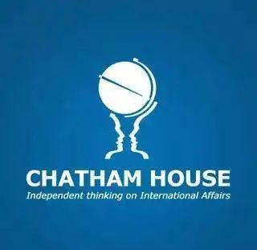
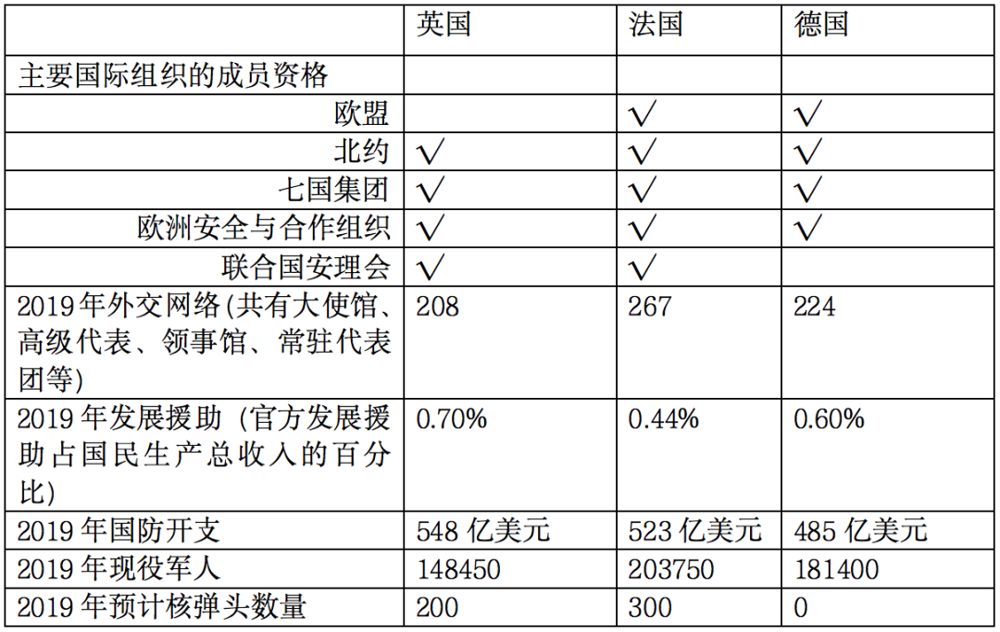
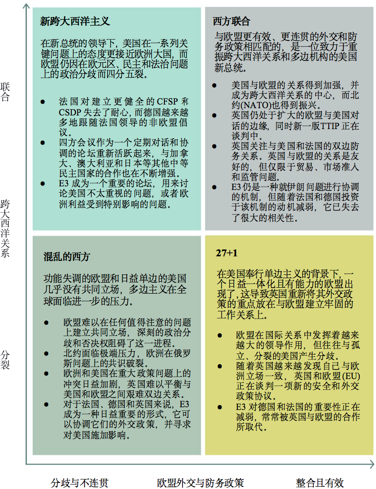

收录于合集

作品简介
【作者】 Alice Billon-Galland：查塔姆研究所欧洲项目助理研究员，关注安全和防务问题。她曾是“欧洲领导力网络（European Leadership Network）”欧洲防务项目的主要负责人。她的研究方向包括欧洲防务合作、法国外交和防务政策等。
Thomas Raines：查塔姆研究所欧洲项目的主要负责人，他曾在英国外交与联邦事务部战略处工作。他的研究方向为英国外交政策、英国-欧盟关系和欧洲政治。
Richard G. Whitman：肯特大学政治与国际关系教授，肯特大学全球欧洲中心主任。他曾是查塔姆研究所欧洲项目主任。他的研究方向集中于英国脱欧问题以及英国和欧盟未来的外交、安全和防务政策。
【编译】 刘潇昱（外交学院国际关系研究所）
【校对】 刘瑛琛
【审核】 房宇馨
【排版】 苏语涵
【美编 】聂涵琳
【来源】 Alice, B.G., Thomas, R., & Richard, G.W. (2020). The future of the E3: Post-Brexit cooperation between the UK, France and Germany. Retrieved August 13, 2020, from Chatham House Website: https://www.chathamhouse.org/sites/default/files/2020-07-28-future-e3-post- brexit-cooperation-billon-galland-raines-whitman.pdf.
机构简介

查塔姆研究所（Chatham House），又名英国皇家国际事务研究所(the Royal Institute of International Affairs)，它是目前英国规模最大、世界最著名的国际问题研究中心之一。该研究所属于国际事务中的独立智库，《国际事务》 (International Affairs) 、《今日世界》 (The World Today) 等刊物均由该研究所编辑出版。该研究所每年发布的报告、书籍和其他研究成果是英国政府部门制定决策的重要参考来源。
【智库聚焦】欧洲“三巨头”模式的未 来： 英国脱欧后的英法德合作
The Future of the E3：Post-Brexit Cooperation Between the UK, France and Germany
Alice Billon-Galland
Thomas Raines
Richard G. Whitman
摘要
本文探讨了法、德、英三国“三巨头（European/EU3，以下简称E3）”外交协调模式的起源及其未来可能的发展。作者阐述了E3在未来十年中的潜在作用，以及英国如何才能最好地利用这一协调模式。
本文第一节从伊核协议到更广泛的外交协调中考察了E3模式的起源和重要性，并分析了其优缺点。第二节分析了当前的政治背景以及英国脱欧对E3模式的影响。第三节阐述了法国和德国对E3的看法以及E3内部的政治动态。第四部分探讨了未来十年的政治和战略发展如何影响E3模式的效用。最后一节则探讨了该模式能如何发展，并提出了一系列供参考的政策选项，以及对英国的建议。
文章导读
01
**** E3的起源和发展
E3模式以法国、德国和英国的联合倡议形式出现于2003年，该模式意在通过谈判解决伊朗核问题。2004年欧盟共同外交与安全政策高级代表（High Representative of the EU for Foreign Affairs and Security Policy）的加入标志着欧盟与伊朗开始建立联系，并形成了“E3+欧盟”的模式。随后中、俄、美三国也加入与伊朗的谈判中，在这一过程中，欧盟一直扮演着“协调者”的角色。十多年来，E3成为解决伊朗核问题的核心外交程序，并在2015年促成了“联合全面行动计划”（Joint Comprehensive Plan of Action, 以下简称“JCPOA”）。尽管2018年特朗普政府宣布美国退出JCPOA，但E3与欧盟仍力图让伊朗遵守JCPOA的准则，并降低美国制裁带来的影响。
除此之外，E3模式还涵盖了叙利亚冲突等其他安全问题，该模式的合作是临时性的，它是对国际安全形势的反应。三国通过在官方层面建立起非正式且常态化的沟通机制，聚焦于解决欧盟内难以达成一致（如戈兰高地问题）或者欧美之间有明显分歧的问题（如叙利亚问题）。
02
E3模式的优缺点
随着E3外交合作模式的发展，其优缺点也逐渐明显。其主要的优点在于：
1、有效的政策协调：英法德三国作为欧洲最重要的三股外交力量能够保持共同立场而并未各行其是。
2、高效的共识建立：通过“E3+欧盟”的模式，小集团中达成的一致政策可以成为欧盟共识的基础。
3、跨大西洋分歧管控：可以帮助形成共同的欧洲立场，同时使得部分国家免于美国的过度施压。
4、可靠的“搭桥”能力：E3模式给伊朗提供了一个对话的机会，如果只通过美国和伊朗的双边途径，则难以架构起沟通的桥梁。
5、轻度的制度化：E3模式既有效率又简单，它为达成共同的立场提供了一种直接且灵活的方式。
同时，这一模式也表现出几点局限性：
1、问题导向的起源：E3模式是在特定问题和环境下产生的，如果要在其他问题上达成如在伊朗问题上一样的战略一致性是较为困难的，这也潜在缩小了E3的合作范围。
2、欧盟内部的抵制：E3的合作招致了欧盟内部部分成员的批评，因为这些国家认为E3有可能绕开欧盟的共同决策程序。
3、影响力不足：相较于欧盟，E3的决定并没有那么大的影响力。特别是在英国脱欧后，E3很难将它的声明同欧盟的政策进行衔接，其影响力将会被进一步削弱。
03
英国脱欧后E3的环境
英国脱离欧盟后，需要重新调整它与欧盟和其他欧洲国家的外交关系，在欧盟与英国可能没有正式外交、安全和防务政策安排的情况下，E3的合作就具有更大的意义。
E3模式成功地避免了英国脱欧进程中的复杂性和政治性。自2018年以来，E3合作的速度和强度有所提高，这主要是受到安全挑战倍增、与美国存在政策分歧以及欧盟层面缺乏共识等因素的推动。 但是，维持E3合作并确保其不受英国脱欧后谈判的影响，仍是一项政治挑战。
欧盟和英国在外交与安全政策领域的合作，以及它所关联的更广泛的政治关系，可能会影响E3的未来。如果英国与欧盟的直接合作渠道最终变得松散或者无效，那么E3模式作为一种影响更广泛欧洲立场的机制，对于英国来说会更为有用。
但另一方面，由于英国的脱欧，继续进行或扩大E3模式可能会招致非E3国家的尖锐批评，比如意大利和波兰等国家对E3的合法性一直有所质疑，这也会对法德两国造成压力，迫使它们限制该机制的作用。而且扩大E3的合作也有可能会损害英国与非E3国家的欧洲伙伴深化双边合作的努力，这些都受到英国脱欧后是否能与欧盟达成全面政治协议的影响。
04
政治动态和未来发展
法国和德国的观点
法德两国已经将E3视为协调欧洲在国际安全问题上政治立场的重要政府间工具。不管英国脱欧的情况如何，德国和法国都认为，这个位于欧盟(EU)和北约(NATO)之外的组织运作良好，应该得到保留。目前，还没有除E3以外的机制可以在欧盟进程之外增强欧洲的外交和安全政策影响力。 实际上，在短期内，英国脱欧可能会加强欧洲外交政策脱离欧盟框架的趋势，进而转向E3的少边（minilateral）模式或者以问题为导向的诺曼底模式。
三国间的政治动态
E3成员国之间既有共同的利益和立场，也有利益分歧，法德两国在许多战略问题上缺乏共识，英国的加入可以起到一个平衡者的角色。一方面，法国可以同英国一道向德国施压，要求其在思考和行动上更具策略性；另一方面也有助于德国制衡法国积极寻求欧洲领导地位的主张。然而法德也会担心英国脱欧带来的短期影响，它们需要考虑如何证明与英国继续在安全问题保持接触的合法性。 更加重要的是，如今法德担心英国未来可能会优先考虑与新兴市场、英联邦国家以及五眼联盟国家的关系，而非其欧洲的伙伴。
另一种欧洲外交与安全架构
法德两国都认识到了在英国脱欧之后与其保持合作的必要性。因此，在E3之外，法德还提议建立一个欧洲安全理事会（European Security Council）,它将把欧盟成员国（但不包括欧盟机构）紧密联系在一起。然而，就欧洲安全理事会的确切制度形式，法德两国现阶段存在分歧。法国认为这应该是一个具有较少决策权的灵活机构，更接近于“欧洲理事会+英国”的模式，而德国则希望建立一个更加正式的机构。
表1：关于E3国家的关键信息

05
接下来十年的E3
两个相互关联的问题将在E3的演变中发挥核心作用：欧盟作为外交和安全政策行为体的发展以及跨大西洋关系的性质。
E3未来的一个关键因素是欧盟在多大程度上能成为一个更连贯、更有效的外交和安全政策行为体，如果欧盟的政策框架薄弱或支离破碎，那么E3可能会发挥最大的作用。 近年来，欧盟成员国寻求建立新的防御与安全框架以改善内部合作，如欧洲防务基金（European Defence Fund）和永久性结构合作（PESCO）框架的创建。然而这并不代表欧盟在共同防务政策上实现了重大飞跃， 在未来10年，能力、政治意愿、威胁感知的差异以及决策一致原则可能将继续限制欧盟共同外交与安全政策（CFSP）以及共同安全与防务政策（CSDP）的发展。
新冠肺炎疫情对欧盟成员国间关系的影响尚不明确，目前看来，新冠肺炎疫情引发了欧元区内部的紧张局势。近年来欧盟成员国外交政策缺乏凝聚力，这体现在各国无法在叙利亚战争、委内瑞拉政治危机等问题上达成共识。同时，欧洲各国内部政治分裂加剧了欧盟内部的异质性，使得达成共识更加困难，法德在欧盟外交与安全政策上也未明确达成一致。
第二个因素是跨大西洋关系对E3模式的影响。在过去4年里，相比于与美国的分歧，英、法、德在许多问题上能够达成更多的共识，这就强化了E3合作的逻辑：E3是志同道合国家之间的一种协调模式，也是通过共同立场影响美国的一种机制。如果特朗普连任，这一逻辑将进一步强化，那么欧洲国家可以借助E3来管控与美国日益扩大的分歧。如果民主党上台，美国和欧洲可能进一步联盟，这将会降低E3模式的效用，欧洲也不会发生集体影响或抵制美国政策情况。当然美国也可能会支持E3和美国之间的非正式四方安全对话，从而让欧洲人承担更多地区责任。
06
E3的未来：英国脱欧后的选择
由新冠病毒引发的全球卫生和经济危机、11月的美国大选以及将于12月结束的英国脱欧过渡期将对塑造英国未来面临的外交政策环境具有重要意义，这些变化可能使图1中列出的某一个场景发挥更重要的影响。E3的重要性和作用可能会因未来的变化有很大不同，然而在所有情况下，E3仍将是一个灵活的三边外交平台。以下是未来E3的选择以及英国政府如何在未来几年充分利用该模式的建议。
 图1：未来10年的四种情景
E3的选择
一是降级或去优化，即降低E3合作的程度和强度，然而考虑到E3模式的优势以及三国目前的政策取向，降级E3不符合英国的利益。二是扩大参与，英国可以与法国和德国合作扩充成员，但更广的范围将不可避免地出现更多的妥协，并可能稀释成员国之间的政治联盟，也将造成对排他性的解释问题，且上述一些变化可能会与G7重复，因此，就目前而言，扩大对E3的参与并不是最好的出路。三是E3制度化，这种方式可能会提升E3作为一个应对长期挑战并进行战略规划平台的价值，使E3免受政治变革或政府首脑之间私人关系的影响；然而，制度化也存在问题，比如会过度追求政府的时间和资源、为自身利益而不是为问题或议程服务、让其他欧洲国家认为它们被排斥在外或者欧盟的外交政策进程被忽视了。
对英国的建议：灵活的E3（Flexi3）
为了最大限度地利用E3并创造出一种既能适应未来发展、又能为法国和德国所接受的模式，英国应该采取双轨方式。 在内容上旨在创造E3协调的新领域(扩大关注点)，在过程上，旨在优先考虑三个国家之间的适应性、非正式性和响应性(保持模式的灵活性和欧洲特性)。
在扩大关注点上，可以通过以下四种方式扩大议程范围。首先是区域关注点，E3可以集体确定他们在寻求在一套共同目标的基础上采取行动的地区；其次是核心关注点，借鉴E3应对伊朗核扩散风险的经验，继续关注防止核扩散和军备控制，其他合作领域可能包括网络安全、通过海洋安全和气候变化相关问题管理全球事务；再次是多边关注点，E3活动可以以国际制度下的合作为重点；最后是危机关注点，E3也可以代表一种协调欧洲集体应对国际危机的既有安排。
只有具备以下三个条件，E3在新领域的合作才最有可能取得成功。 一是英国、法国和德国在战略目标上有广泛的一致。二是欧盟很难达成更广泛的共识，或者这个话题通常不会在欧盟层面讨论。三是美国的立场与E3不同或相反，或者美国对这个问题的兴趣或关注相对较少。
在灵活化的过程中，英国应优先考虑E3合作的灵活性和适应性，以体现该模式的优势和大环境的不确定性，灵活性需要英国在适当情况下愿意让欧盟的高级代表加入E3。 总的来说，灵活的模式有很多优点，它为英国提供了一种良好而简单的方式，让英国在无需明确承诺遵守欧盟政策框架的前提下继续影响欧洲的思维，还能在保持法国和德国青睐的欧洲模式的同时通过高级代表与欧盟进行更广泛的接触。
07
结论
英国有充分理由在脱欧后与法国和德国在国际安全问题上保持密切联系。首先E3是美国与欧洲盟国关系和追求共同国际安全目标的一个关键外交因素，且在未来有发展和演变的潜力。其次，英国在保持灵活性和少量的资源投入的同时能让E3模式作为讨论政策和应对危机的首要平台，为英国提供了发表自己的声音、与重要的欧洲国家合作和影响欧洲政策立场，以及一个非正式参与更广泛的欧盟战略讨论的机制。
法国和德国很可能支持持续性地与E3模式接触，但这种接触的范围、形式和时间框架将由几个因素决定，包括英国与欧盟的关系、欧盟外交和安全政策的演变，以及跨大西洋关系的状况。 对德法来说，比起纯粹的E3，使用“E3+欧盟”模式可能是更可取的选择。这一选择可以在避免越过欧盟的同时留住其他欧盟成员国，且为英国欧洲外交和北约内部关系又增加了一层。然而，E3+欧盟模式更可能会在发挥欧盟优势的长期进程中展现出最佳效果，而不是在需要快速反应或欧洲几乎没有共识的问题上。
E3模式应保持灵活性，成为一个适应性强的外交协调平台，能够应对一系列新的主题、地区或多边挑战。此外，制度化带来的好处不太明显，可能会破坏其目前非正式模式的灵活性。然而，E3的合作很可能受到更广泛的欧洲和跨大西洋安全环境演变的严重制约。 发展E3模式将需要英国在前进的道路上与法国和德国达成共识，并在这种模式上投入政治意愿。 在围绕英国脱欧后的国际地位展开了更广泛辩论以及对欧洲外交和安全架构的演变出现更多提议之际，英国应该对E3模式的未来形成一个清晰的构想，并与法国和德国一道推动E3的发展。
译者评述
作为欧洲的“三驾马车”，英法德三国的关系和互动可以说直接决定了欧洲的政治格局和未来发展。随着英国脱欧，英法德三国难以在欧盟框架下展开合作与对话，E3合作模式成为了三国架构沟通“桥梁”的重要机制。E3模式实际上体现了少边主义在欧洲政治环境中发展，有学者认为这种少边主义更有利于克服集体行动困境，并达成切实有效的合作[1]，但相关国家不同时期的世界观、力量变化所引发政策变化，是影响其发展的重要因素，由此会带来很大的不确定性[2]。
本文认为影响E3未来的不仅仅是英国与欧盟的关系，欧盟自身是否能够发展出在外交和防务领域足以凝聚共识的制度模式以及跨大西洋关系的未来走向，这些都将决定E3未来的效用。
除此之外，值得注意的是本文以欧盟外交和防务政策和跨大西洋关系作为变量，预测了未来欧洲政治格局的四种可能方向，向读者阐明了E3在将来所面临的政治大环境，这也能够帮助我们更好地了解英国脱欧后整个欧洲的政治环境以及跨大西洋关系的变化。当然，作为一篇由智库撰写，并意在给英国政府提供政策建议的研究报告，它主要还是站在英国的立场看待E3模式。虽然它有助于我们洞悉E3的发展与未来，但是本文也有一定的倾向性，作者对于欧盟在外交和防务领域的已有成绩并不抱乐观态度，并且突出了法德关系中的嫌隙。
从本文可以看出，即便英国脱欧，英国的影响也难以被排除或者忽视，法德无法完全依赖欧盟的政策框架，特别是在伊核问题上。去年，三国与伊朗建立特殊的贸易结算机制，以防止美国对欧洲企业实施制裁[3]。今年年初，英法德又共同启动了伊核协议框架下的争端解决机制[4]，足可见E3模式仍然在伊核问题上发挥着重要作用。
参考文献
[1]Naím, M. (2009). Minilateralism. Foreign Policy , (173), 136-135.
[2]张勇：《奥巴马政府的亚太地区“少边主义”外交浅析》，载《美国研究》,2012年第2期，第70页。
[3]戴定等：《英法德启动伊核协议争端解决机制》，载《国外核新闻》，2020年第2期，第30页。
[4]乔新生：《英法德是否在挑战贸易结算美元中心机制》，载《证券时报》，2019年7月3日，第A03版。
文章观点不代表本平台观点，本平台评译分享的文章均出于专业学习之用, 不以任何盈利为目的，内容主要呈现对原文的介绍，原文内容请通过各高校购买的数据库自行下载。
添加 “国小政”微信
获取最新资讯


国政学人
支持学术公益与知识传播
微信扫一扫赞赏作者 __赞赏
已喜欢，对作者说句悄悄话
取消 __
发送给作者
发送
最多40字，当前共字
上一页 1/3 下一页
长按二维码向我转账
支持学术公益与知识传播
受苹果公司新规定影响，微信 iOS 版的赞赏功能被关闭，可通过二维码转账支持公众号。